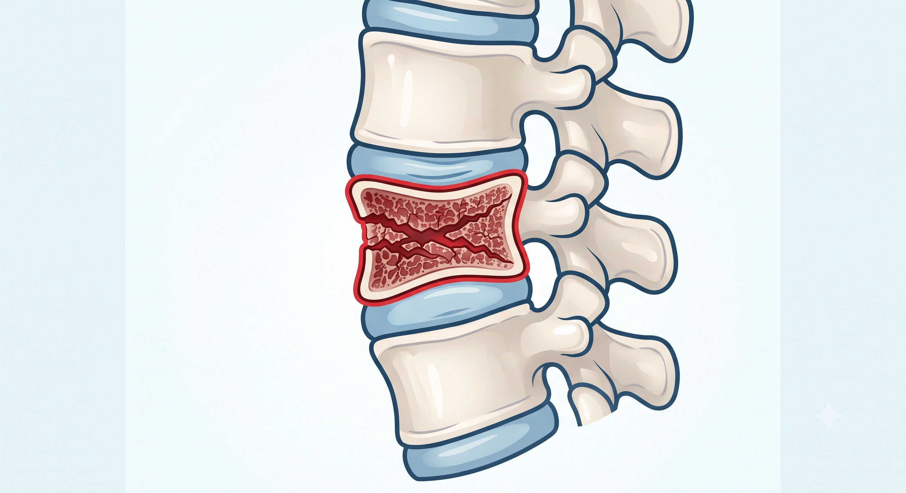
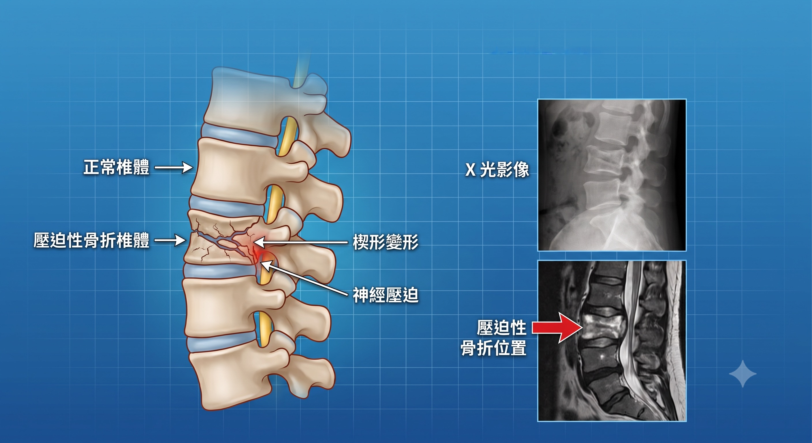
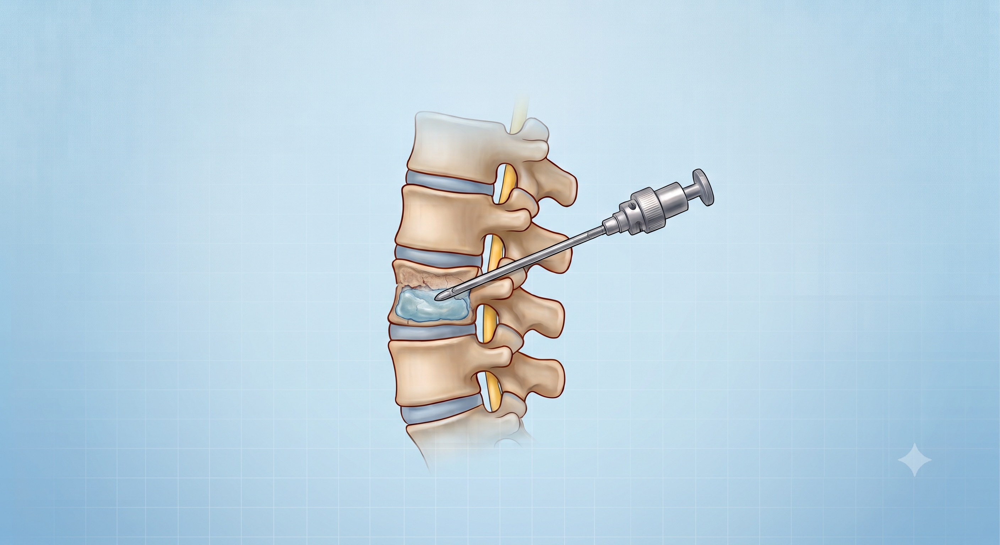
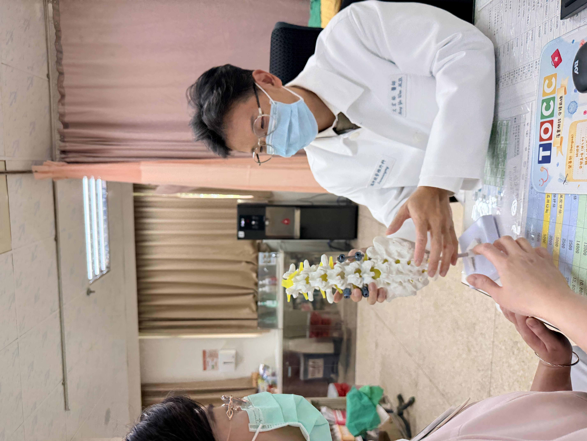

老人跌倒後翻身劇痛、無法下床？別讓一次骨折，變成長期臥床的開始。
脊椎壓迫性骨折常見於骨質疏鬆的患者。當骨頭變得脆弱時，即使只是輕微跌倒、彎腰、搬東西，甚至用力咳嗽，都可能造成脊椎椎體塌陷，引發明顯腰背疼痛。
許多長輩骨折後，會突然痛到無法翻身、坐起或站立。有些人一開始以為只是肌肉拉傷，休息幾天就會好，卻發現疼痛越來越嚴重，甚至因為疼痛而不敢下床。
這時候，家屬常常陷入兩難：
擔心長輩年紀大，承受不住治療；
但如果不處理，又看著長輩因為疼痛長期臥床、食慾下降、體力流失，甚至逐漸失去原本的行動能力。
脊椎壓迫性骨折的治療，重點不是強迫手術，而是判斷疼痛來源、穩定骨折結構，幫助長輩有機會重新坐起、站立、下床活動。
什麼症狀需要注意？
如果出現以下情況，建議儘早就醫評估：
- 跌倒後腰痛或背痛明顯加劇
- 翻身、坐起、站立時特別疼痛
- 休息幾天後仍沒有改善
- 原本可以走路，現在因疼痛不敢動
- 因疼痛無法下床，需要家人協助
- 身高變矮、駝背越來越明顯
- 已知有骨質疏鬆，最近突然腰背痛
一般放射線檢查、電腦斷層或核磁共振檢查，可以協助判斷骨折的位置、新舊程度、塌陷程度，以及是否有神經壓迫。

脊椎壓迫性骨折一定要開刀嗎？
不一定。
有些壓迫性骨折可以先透過藥物、背架、休息、復健與骨質疏鬆治療慢慢改善。
但如果疼痛嚴重到影響翻身、下床、行走，或保守治療一段時間後仍然無法改善，就需要重新評估是否適合進一步治療。
重點不是「有骨折就一定要手術」，而是要判斷：
- 疼痛是不是來自新的壓迫性骨折？
- 骨折是否仍在活動、尚未穩定？
- 椎體是否持續塌陷？
- 疼痛是否已經影響生活與活動能力？
- 繼續保守治療，是否反而增加長期臥床的風險？
不開刀一定比較安全嗎？
不一定。
對骨折較輕、疼痛可以控制、仍能下床活動的患者來說，保守治療是合理選擇。
但保守治療不代表「躺著等它自己好」就一定安全。
如果椎體持續塌陷、骨折處不穩定，或骨折碎片往神經管方向移位，就可能造成脊椎變形、駝背惡化，甚至壓迫神經或脊髓。
這種情況若沒有及時追蹤與處理，可能從單純腰背痛，逐漸出現腳麻、腳無力、走路困難；嚴重時甚至可能造成大小便控制異常、不可逆神經損傷或癱瘓風險。
此外，對高齡長輩來說，長期臥床本身也是風險。
如果痛到無法翻身、坐起或下床，可能造成肌力流失、食慾下降、肺炎、褥瘡、血栓與生活功能退化。
所以，壓迫性骨折不是只看「能不能忍痛」，而是要判斷骨折是否穩定、有沒有持續塌陷、是否壓迫神經，以及長輩是否還能維持基本活動能力。
如果疼痛已經讓長輩長時間臥床，或影像顯示骨折不穩定、持續塌陷，就應評估是否適合微創骨水泥、氣囊撐開或千斤頂椎體撐開手術。
什麼是骨水泥手術？
骨水泥手術是一種治療脊椎壓迫性骨折的微創治療方式。
手術時，醫師會在影像導引下，經由背部小傷口，將醫療用骨水泥注入骨折的椎體內，幫助穩定塌陷的骨頭，減少骨折處持續活動所造成的疼痛。
單節脊椎壓迫性骨折的微創骨水泥手術，手術時間多約半小時左右。實際時間仍會依照骨折節數、骨折型態、是否需要椎體撐開器，以及病人身體狀況而有所不同。
有些患者適合單純骨水泥注入；有些患者則可能需要搭配氣囊撐開或椎體撐開器，也就是病人常聽到的「脊椎千斤頂」。
什麼是千斤頂椎體撐開手術？
千斤頂椎體撐開手術，是針對部分椎體塌陷較明顯的患者，所使用的進階微創治療方式。

簡單來說，骨水泥手術主要是穩定骨折椎體；氣囊撐開術是先用氣囊撐開塌陷椎體，再灌入骨水泥固定；而千斤頂椎體撐開手術，則是在注入骨水泥前，先將椎體撐開器置入塌陷的椎體中，利用支架力量將椎體適度撐開，再灌入骨水泥固定。
氣囊撐開的概念，比較像是暫時撐開、建立空間，再填入骨水泥。
千斤頂椎體撐開則多了一個重要特色：
撐開後的支架會留在椎體內，持續提供內部支撐。
因此，相較於氣囊撐開，千斤頂椎體撐開更重視「恢復椎體高度」與「重建支撐結構」。對於部分椎體塌陷明顯、變形較嚴重，或希望盡量恢復脊椎排列的患者，千斤頂椎體撐開會是值得評估的進階選擇。
它的目標是在適合的情況下：
- 撐開塌陷椎體
- 恢復部分椎體高度
- 改善脊椎支撐結構
- 減少疼痛來源
- 降低駝背惡化的機會
- 提供較穩定的骨
- 水泥支撐空間
- 讓骨水泥在較穩定的結構中發揮支撐效果
不過，千斤頂椎體撐開並不是每一位患者都需要。是否適合，仍需依照骨折型態、塌陷程度、疼痛時間、骨質狀況與整體身體條件判斷。
氣囊撐開與脊椎千斤頂，差在哪裡？
| 比較項目 | 氣囊撐開術 | 脊椎千斤頂 |
|---|---|---|
| 撐開方式 | 以氣囊暫時撐開塌陷椎體，之後取出氣囊，再灌入骨水泥 | 以椎體撐開器撐開塌陷椎體，支架留在椎體內，再灌入骨水泥固定 |
| 支撐概念 | 主要建立骨水泥填充空間 | 除了建立骨水泥填充空間，也提供內部支架支撐 |
| 適合情況 | 椎體塌陷較輕至中等，仍適合撐開者 | 椎體塌陷較明顯、變形較嚴重，且仍有撐開空間者 |
| 主要優勢 | 微創、可改善椎體塌陷、費用相對較低 | 更重視恢復椎體高度、改善脊椎排列與重建支撐結構 |
| 費用概念 | 約9萬元 | 約13萬～26萬元 |

簡單來說，氣囊撐開像是：先撐開，再填補。
先撐開，再填補。
脊椎千斤頂則是：
撐開後，留下支架支撐，再用骨水泥固定。
如果只是單純穩定骨折、減少疼痛，部分患者使用一般骨水泥或氣囊撐開就足夠。
但如果椎體塌陷明顯、變形較嚴重，或希望盡量恢復椎體高度與支撐結構，千斤頂椎體撐開就會是更值得討論的選項。
真正的重點不是選最貴的醫材，而是選擇最適合骨折型態的治療方式。

微創治療有哪些好處？
1. 疼痛改善通常較明顯
對於疼痛來源明確、影像檢查符合新鮮壓迫性骨折的患者，骨水泥手術可以穩定骨折椎體，減少骨折處持續微動所造成的疼痛。
臨床上，多數適合接受骨水泥治療的患者，術後疼痛可有明顯改善；部分患者疼痛改善幅度可達七到八成以上。實際改善程度仍會受到骨折時間、骨折型態、骨質狀況、是否多節骨折，以及是否合併其他腰椎疾病影響。
2. 傷口小，身體負擔較低
骨水泥與千斤頂椎體撐開手術屬於經皮微創治療，通常不是傳統大傷口手術。傷口約半公分左右，對高齡、體力較弱，或擔心大型手術風險的患者來說，身體負擔通常較低。
3. 多數不需要全身麻醉
多數骨水泥與椎體撐開手術可以在局部麻醉、靜脈鎮靜或舒眠麻醉下完成，不一定需要全身麻醉。實際麻醉方式仍需由醫師與麻醉團隊評估。
4. 手術時間短，較快恢復活動
單節骨水泥或椎體撐開手術，手術時間多約半小時左右。
如果疼痛來源明確、手術適應症合適，部分患者術後當天或隔天即可嘗試站立、下床活動，甚至恢復日常生活，減少長期臥床造成的肌力流失與生活功能退化。
骨水泥與千斤頂費用怎麼看？
目前符合條件的脊椎骨水泥已納入健保給付，但並不是所有情況都一定符合健保規範。是否可以申請健保，需依照骨折原因、疼痛程度、保守治療時間、影像檢查與骨質密度檢查結果判斷。
骨水泥費用比較
| 骨水泥分類 | 手術方式 | 符合健保條件費用 | 113/7/1後不符合健保規範需自費 |
|---|---|---|---|
| 低溫高密度骨水泥 | 將骨水泥經皮注射到發生骨折的椎體中，提供部分支撐 | 部分負擔 | 約7萬元 |
低溫高密度骨水泥健保條件說明：
依健保規範，若經骨質密度檢查確立為骨質疏鬆症，合併嚴重背痛，且保守治療四週以上仍未改善者，經評估符合條件後，可申請健保給付。
氣囊撐開術與脊椎千斤頂費用比較
| 治療方式 | 手術方式 | 手術費用 |
|---|---|---|
| 氣囊撐開術 | 將特製氣囊放置於脊椎骨折處，利用氣囊撐開以恢復壓扁的脊椎，再灌入骨水泥固定。目的在於改善椎體塌陷變形，並提供較好的骨水泥填充空間 | 約9萬元 |
| 脊椎千斤頂 | 將椎體撐開器以微創方式置入椎體中，利用支架力量撐開塌陷椎體，再灌入骨水泥固定。相較於單純骨水泥或氣囊撐開，更著重於支撐塌陷椎體、恢復部分椎體高度與重建支撐結構 | 約13萬～26萬元 |
以上費用為常見費用概念，實際金額仍會依照醫材種類、治療節數、醫院收費規定、是否符合健保條件與病人狀況而有所不同。
骨水泥不是終點，還要處理骨質疏鬆
骨水泥與千斤頂椎體撐開手術，可以處理這一次造成疼痛的壓迫性骨折；但如果沒有處理骨質疏鬆，未來仍可能再次發生脊椎骨折。
因此，治療不能只停在「灌骨水泥」。後續仍需要評估骨密度、骨質疏鬆用藥、跌倒風險與營養狀況，才能降低再次骨折與再次臥床的風險。
不是每一個壓迫性骨折都需要手術。
但如果疼痛已經讓長輩無法翻身、起床、走路，甚至影響生活自理，就不應該只是一直忍耐。
手術不是目的，回到生活才是目的。
把時間留給生活，不留給疼痛。